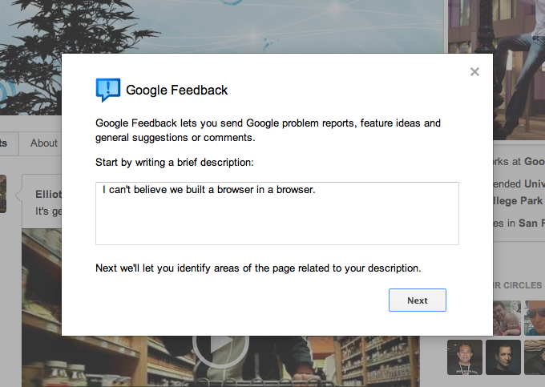
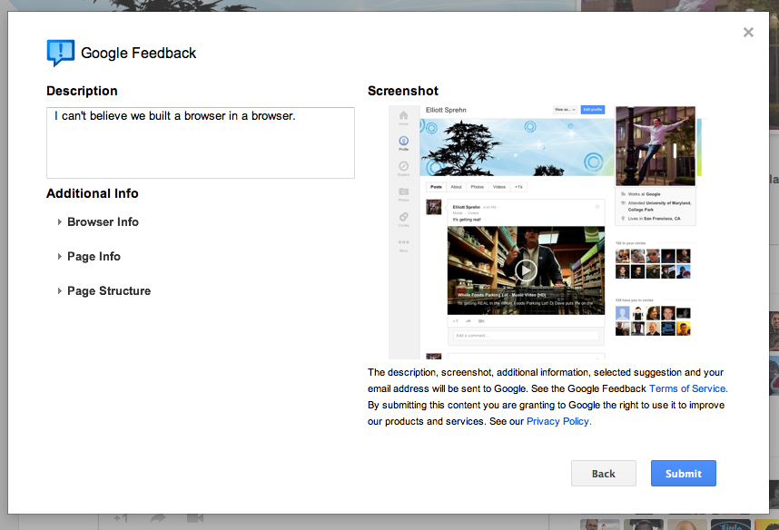
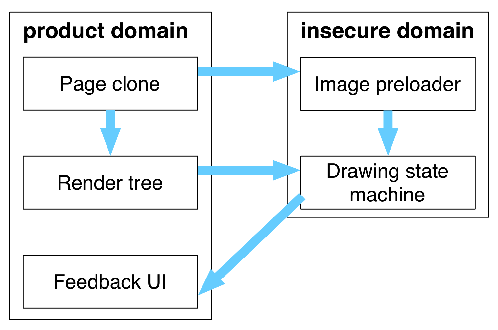
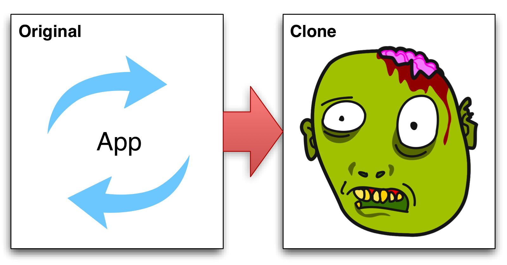
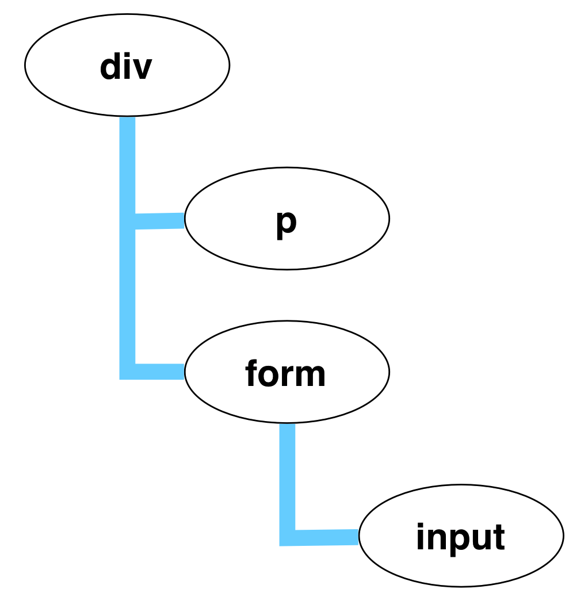
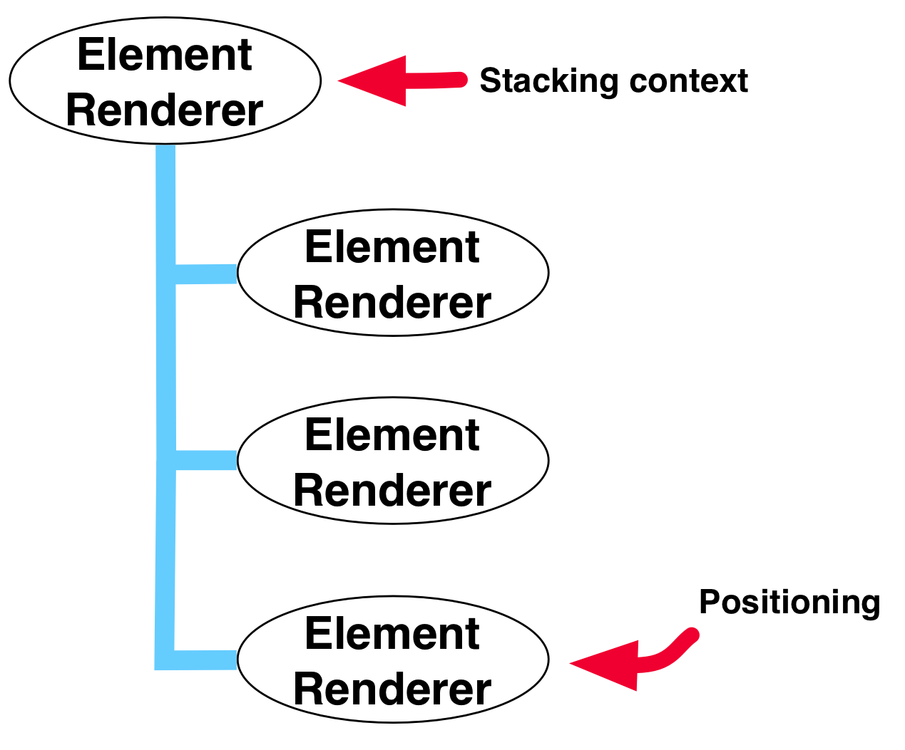
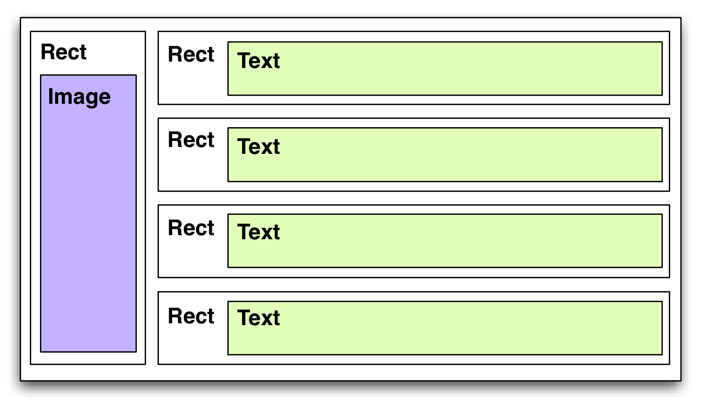
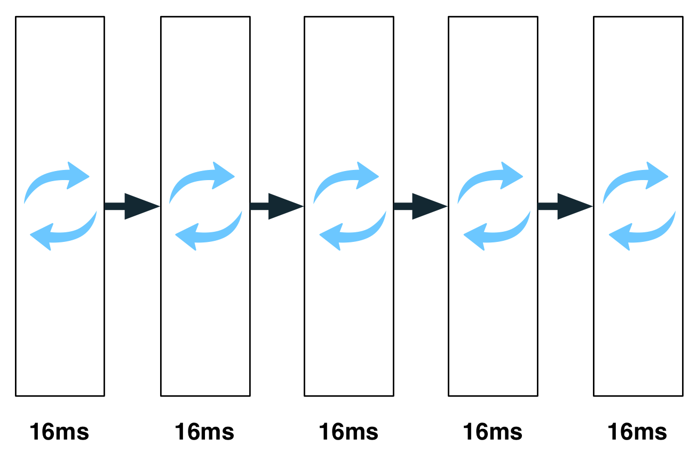

Screenshots
Elliott Sprehn
«
{{activeSlide + 1}} / {{totalSlides}}
»
What is Google Feedback ?

Screenshots in JavaScript (on the web)

Why screenshots
- More useful feedback
- Users write bad descriptions
- Annotations show location of issues
Why client side
- Privacy
- Blackouts
- Scalability
- Cross platform
What about extensions
- Angry users don't install things
- Lots of browsers to support
- Policies prevent installs
Feedback internals

Clone the page

Measuring text
- OR -
Proxy and serialize images
- Proxy cross domain images
- Use an iframe on the proxy domain
- Serialize same domain images
postMessage() data urls
Element tree

Render tree

Create primitive commands

Serialize commands
Serialized commands (2)
Optimize commands
Image compression
- JPEG Encoder in JS (Adobe)
- toDataURL('image/jpeg', 0.2)
Algorithms!
Async Executor

AsyncExecutor#execute()
Async drawing
Async DOM Traversal
Async DOM Traversal (2)
AsyncExecutor#forEach()
Async DOM Traversal (3)
Memory issues
- 14MB of JSON
- Massive data URLs
- 1GB buffer allocations (canvas)
- Cache as much as possible
Performance issues
- Opacity is super slow
- Use two modes: compute → draw
- Impose deadlines
Why deadlines
- Abort slow async tasks
- FF13, Chrome, Safari 5.1 are fast
- IE8 and Firefox 3 are super slow
- IE9 is (somewhat) better
Similar projects